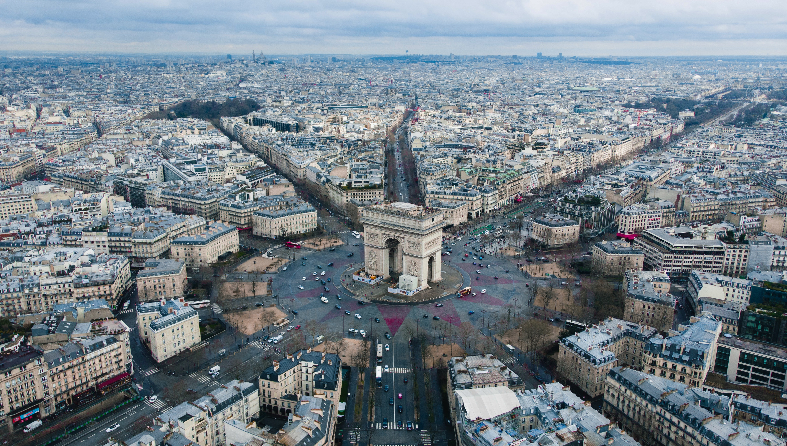
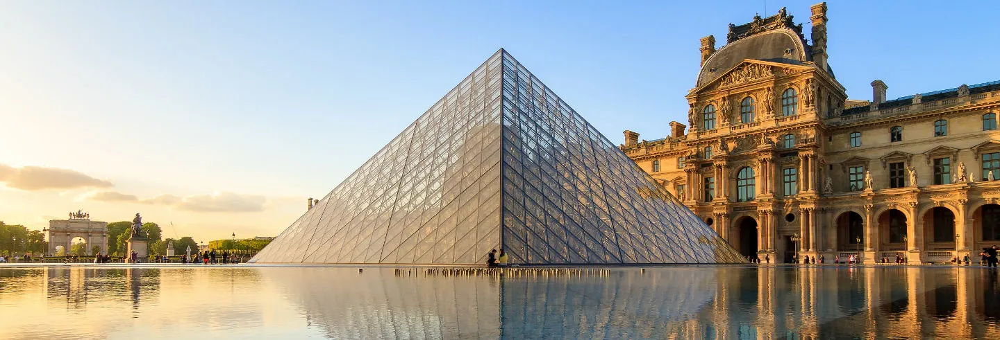
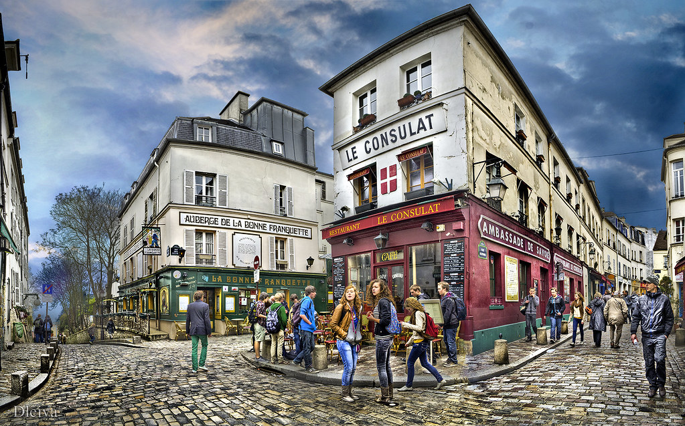
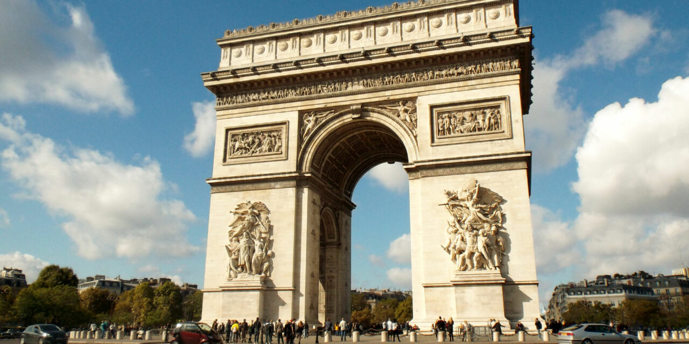
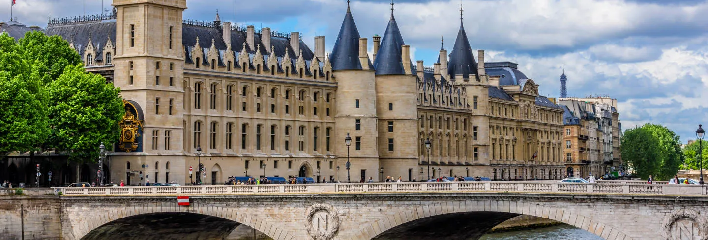
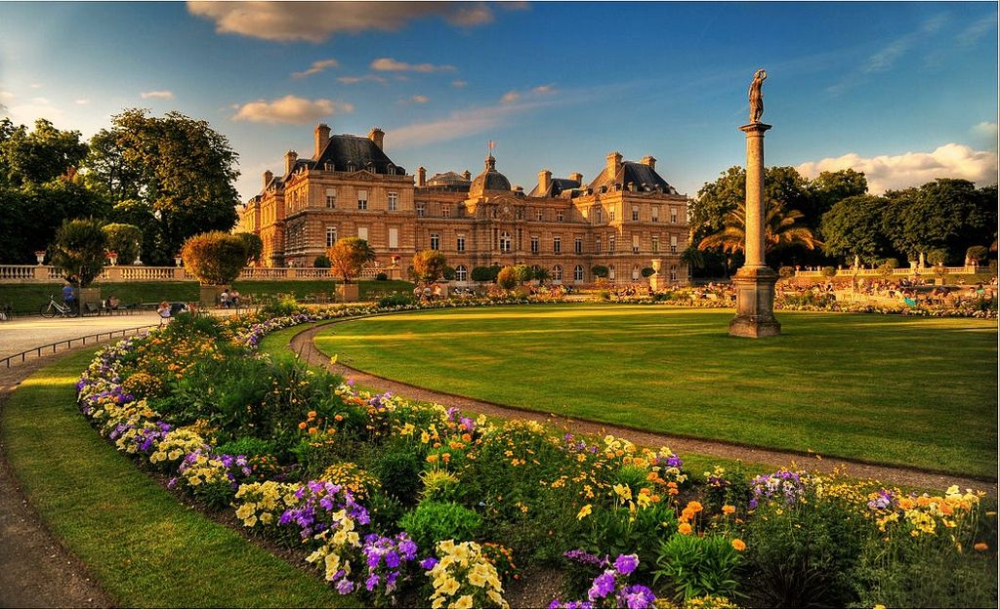
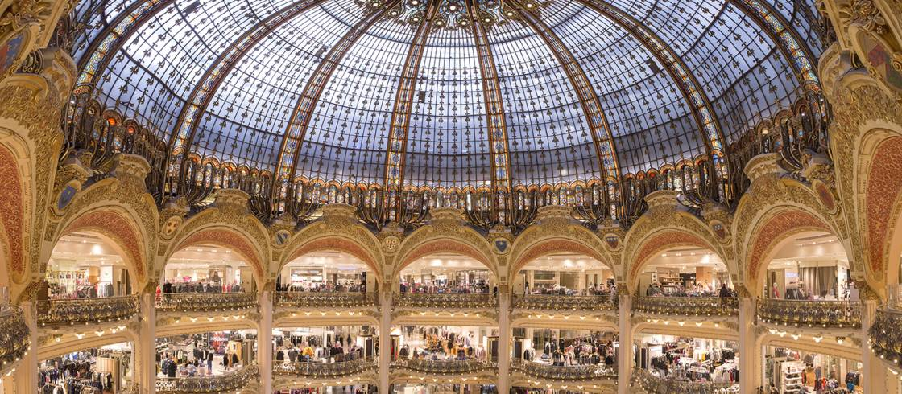

Que Visitar en Paris?
by Nosotros
Hace 1 hora Nuevo!
Introducción
Esta lista de los mejores lugares que visitar en París, te ayudará a preparar tu viaje y a no perderte nada importante de una de las ciudades más bonitas del mundo. Conocida como la Ciudad del Amor, la capital de Francia es perfecta para dar largos paseos románticos por la orilla del Sena o por los barrios de Montmartre y Le Marais, además de tener algunos de los monumentos más famosos del mundo como la Torre Eiffel, el Louvre, la Sainte Chapelle o la malograda Catedral de Notre Dame, que esperemos que pronto vuelva a brillar. Aunque París es una ciudad para volver una y otra vez, para un primer viaje recomendamos estar de 3 a 5 días para visitar lo más importante y disfrutar de experiencias típicamente parisinas como tomarse un café con un croisant en alguna bonita terraza, hacer un picnic con vistas a la Torre Eiffel o ir de compras por sus elegantes galerías.
1. Torre Eiffel Popular!
La Torre Eiffel fue creada para la Exposición Universal de París del año 1889 y aunque no gustó en un principio a los parisinos por su diseño, con el paso del tiempo se ha convertido en el símbolo de la ciudad y en el monumento más visitado del mundo con más de 7 millones de personas al año. Para subir a la zona más alta de esta estructura de hierro de 300 metros de altura, construida por el famoso ingeniero Gustave Eiffel, te recomendamos utilizar el ascensor antes que la escalera de 1665 escalones din olvidar que a diferencia de la escalera, en los ascensores se forman interminables colas, que te puedes ahorrar reservando aquí tus entradas con antelación. Además con esta entrada puedes acceder a las 3 plantas de la torre que te permiten ver la estructura del edificio de cerca y disfrutar de unas espectaculares vistas panorámicas de toda la ciudad o disfrutar de uno de los mejores restaurantes de París «Le 58 Tour Eiffel«, perfecto para una ocasión especial.

En París, a uno siempre le recuerdan que es extranjero. Si estacionas mal tu coche, no es el hecho de que esté en la vereda lo que importa, sino el hecho de que hables con acento.
2. El Louvre
El Louvre, el museo más famoso y visitado del mundo, es otro de los lugares que visitar en París imprescindibles. Inaugurado a finales del siglo XVIII, en este enorme espacio situado en el Palacio del Louvre se encuentra algunas de las obras maestras más importantes de la historia como La Gioconda de Leonardo da Vinci, la Venus de Milo o el Escriba Sentado del antiguo Egipto. Además de su increíble estructura, en 1989 se construyó una pirámide de cristal en el centro de la plaza, que actúa como entrada, y que merece la pena ver de noche iluminada. Una imagen que estamos seguros, te quedará para siempre en la memoria.
3. Sainte Chapelle
La Sainte Chapelle es nuestra iglesia favorita que ver en París y una de las más bonitas del mundo. De estilo gótico y situada en la preciosa Île de la Cité, se construyó entre 1241 y 1248 para guardar varias reliquias como la corona de espinas, parte de la cruz, el hierro de la lanza y la esponja del martirio de Jesucristo y lo que más destaca del interior es su carencia de paredes, que realza sus impresionantes vidrieras de la capilla superior, donde te quedarás sin palabras frente a tanta belleza. La capilla inferior es más sobria y tiene un fresco de la Anunciación del XIII, considerado el mural más antiguo de la ciudad.

4. Barrio de Montmartre
Montmartre es nuestro barrio favorito de la ciudad junto a Le Marais, que es otro de los lugares que visitar en París imprescindibles. Aunque a día de hoy es muy turístico, podemos decir que todavía conserva cierto aire bohemio de antaño cuando vivían pintores como Picasso o Van Gogh y que además es el lugar perfecto para pasear por sus bonitas calles y edificios, la Place du Tertre, llena de artistas pintando o vendiendo sus cuadros, y visitar la Basílica del Sagrado Corazón, uno de los lugares que ver en París más bonitos. Esta iglesia, que se construyó entre 1875 y 1914, destaca por su fachada blanca, la mezcla de arquitectura romana y bizantina y por sus escaleras, donde podrás vivir una de las cosas que hacer en París: disfrutar de un atardecer inolvidable, con unas magníficas vistas de la ciudad.
5. Arco del Triunfo
El Arco de Triunfo, construido entre 1806 y 1836 por Napoleón para recordar su gran victoria en la batalla de Austerlitz, es el más famoso del mundo y otros de los lugares turísticos que visitar en París. Con 50 metros de alto por 45 de ancho, e inspirado en el Arco de Tito de Roma, está situado en una de las rotondas más grandes del mundo, por lo que tendrás que acceder por un paso subterráneo, para una vez delante, ver la conmovedora Tumba al Soldado Desconocido de la Primera Guerra Mundial. Además de ser un símbolo de París y de toda Francia, este Arco de Triunfo es un excelente mirador con las mejores vistas a la gran avenida de los Campos Elíseos.
6. Río Sena
El río Sena que atraviesa la ciudad formando algunas islas como la Île de la Cité y la Île Saint- Louis, se ha convertido en otra de las atracciones turísticas que ver en París por donde podrás pasear al atardecer desde la Catedral de Notre Dame hasta la Torre Eiffel bordeando este río para disfrutar de uno de los paseos más románticos del mundo. Durante el trayecto cruzarás varios de los puentes más bonitos como el Puente Nuevo, el Puente de las Almas, el Puente de Alejandro III y el Puente de las Artes, que tiene buenas vistas la Île de la Cité, aunque nuestro favorito es Le Pont Neuf de finales del siglo XVI, que es el más antiguo y une la Île de la Cité con la ciudad.

7. Catedral de Notre Dame
La Catedral de Notre Dame, construida entre 1163 y 1345, es una de las catedrales góticas más antiguas y bonitas del mundo. Lamentablemente, en la actualidad, a consecuencia del trágico incendio del 15 de abril de 2019, el edificio sufrió graves daños, y actualmente solo se puede ver su magnífico exterior en la que destaca la fachada occidental y las dos torres. Sobre las puertas de la fachada, se encuentran 28 estatuas que representan a los reyes de Judea e Israel. Nosotros de momento, esperando y deseando una reconstrucción exacta de la catedral de antes del incendio, nos quedamos con el recuerdo de su luminoso interior gracias a sus amplios ventanales y la subida a sus dos torres, en la que se encuentran sus famosas y misteriosas quimeras o gárgolas y desde donde podías disfrutar de unas vistas para el recuerdo.

8. Torre Montparnasse
La Torre Montparnasse con una altura de 210 metros, es nuestro mirador favorito que visitar en París. Este edificio de oficinas, que desentona con la arquitectura clásica de la ciudad, tiene un mirador en la planta 56 y una espectacular terraza en la 59, protegida con cristales, aunque con espacios para hacer fotos al aire libre, desde la que tendrás unas impresionantes vistas panorámicas de 360 grados de todo París con la Torre Eiffel como punto más relevante.

9. Campos Elíseos
Los Campos Elíseos, una amplia avenida de dos kilómetros que unen la Plaza de la Concordia con el Arco del Triunfo, es otro de los lugares que ver en Parías más famosos, en el que paseadlo podrás ver los innumerables escaparates de tiendas lujosas, restaurantes internacionales y grandes edificios históricos como el Petit y el Grand Palais. Al final del paseo llegarás a la Plaza de la Concordia, en la que durante la Revolución Francesa fueron ejecutadas mediante la guillotina más de 1000 personas y en la que en la actualidad se puede ver un obelisco egipcio de más de 3.000 años de antigüedad. Pasada la plaza se encuentran los magníficos Jardines de las Tullerías, perfectos para pasear entre árboles y descansar en sus cómodas sillas con vistas a una fuente.

10. La Conciergerie
La Conciergerie, situada en la Isla de la Cité, es uno de los lugares con más historia que visitar en París. Residencia real entre los siglos X y XIV, este lugar fue residencia real hasta que en 1392 se convirtió en una de las prisiones más duras de la que pocos presos salían ilesos. Entre varios personajes célebres de la época, estuvo en ella un tiempo la reina María Antonieta, antes de morir en la guillotina en 1793. Durante el recorrido por la prisión puedes ver una reconstrucción de la celda de Maria Antonieta y las diferencias de condiciones que existían con los presos pobres, que dormían en el suelo mientras los ricos, disponían de todo tipo de comodidades, incluidos sirvientes.
11. Le Marais
Le Marais, situado en el corazón de la ciudad junto al Sena, es uno de los barrios con más encanto que visitar en París. Aquí podrás conocerás al viejo París paseando por sus calles de adoquines llenas de tiendas vintages, patios escondidos, galerías de arte, boutiques de moda, elegantes mansiones, restaurantes de diseño y rincones para hacer un picnic como la fantástica Plaza des Vosges, la más antigua de la ciudad y donde se encuentra la antigua casa de Victor Hugo. Las calles más famosas del barrio y donde se concentran la mayoría de locales son Rue de Rivoli, Rosiers, Charlot, des Archives, Bourg Tibourg, Vieille du Temple, Obenkampf y a la Rue des Francs-Bourgeois, además de los callejones adyacentes a todas ellas. Además, el barrio tiene la comunidad judía más grande de Europa y está considerado como el barrio gay de la ciudad.

12. Jardines de Luxemburgo
Los Jardines de Luxemburgo son uno de los espacios verdes más bonitos que ver en París además de un lugar perfecto para desconectar del ajetreo de la ciudad. Situados frente al Palacio de Luxemburgo, cerca del barrio Latino, es un lugar muy popular para los parisinos donde vienen a hacer picnic, escuchar conciertos gratuitos o simplemente charlar con amigos tumbados en el césped, sobre todo cuando hace buen tiempo. En estos jardines con un gran estanque central también encontrarás varias esculturas a las que merece la pena dedicar unos minutos, entre todo tipo de plantas y árboles. Uno de sus lugares con más encanto e historia, es la Fuente Médici que se remonta a los inicios de siglo XVII cuando la reina María de Médici los mandó construir recreando el Jardín de Bóboli de su Florencia natal.
13. Catacumbas
Otra de los lugares que visitar en París que además se han puesto más de moda en los últimos tiempos, son las Catacumbas. En esta extensa red de túneles y cámaras subterráneas a 20 metros de profundidad se encuentran restos de más de 6 millones de esqueletos de diferentes épocas formando un gran rosario. De los 300 kilómetros de túneles solo están abiertos al público 800 metros de galerías de paredes forradas de huesos.

14. Galerías Lafayette
Las Galerías Lafayette Haussmann es uno de los centros comerciales más famosos y bonitos del mundo. Sus 7 plantas distribuidas de forma circular parecen un teatro gracias a su enorme cúpula de colores, además de tener una azotea en la que disfrutar de una de las mejores vistas del centro de París gratis. En el interior de estilo art nouveau, puedes encontrar infinidad de marcas a precios razonables, una sección gourmet para comprar productos típicos franceses y una zona de restaurantes y cafés de buena calidad. Uno de los mejores momentos para visitarlo es en Navidad, momento en el que sus increíbles escaparates parecen cobrar vida y un gran árbol en el interior marca la diferencia sobre el resto de decoraciones navideñas de la ciudad.
15. Ópera Garnier
La Ópera Garnier, un inmenso edificio de estilo neobarroco construido por orden de Napoleón en el siglo XIX, es otro de los lugares más bonitos que visitar en París. El interior recargado, ofrece una imagen lujosa y ostentosa, lleno de dorados, mosaicos y grandes lámparas y algunos de sus elementos más destacados son la gran escalera de mármol y la impresionante sala de espectáculos, decorada en rojos y dorados, que inspiró la obra «El fantasma de la Ópera«.

- ¿Sabes cómo le dicen al cuarto de libra con queso en París?
- ¿No le dicen un cuarto de libra con queso?
- Ellos usan el sistema métrico, así que no saben qué demonios es un cuarto de libra.
- ¿Entonces, cómo lo llaman?
- Le llaman... Royale With Cheese.
- ¿Cómo llaman a la Big Mac?
- Una Big Mac es una Big Mac, pero ellos le dicen Le Big Mac.
- Le Big Mac... ja, ja,ja... ¿y cómo le dicen al Whopper?
- No sé, no entré al Burger King.
Comentarios
Daniel
Gran fan de este blog!.
Agustina
Excelente Informacion!.
Juan
Gracias! Me ayudaron muchisimo con mi itinerario de viaje.
Eugenia
A mi tambien. Increible las imagenes e informacion que nos brindan.
Rita
Desde el primer viaje que hice que utilizo su blog. Me sumo a estas personas con mis mayores agradecimientos!.